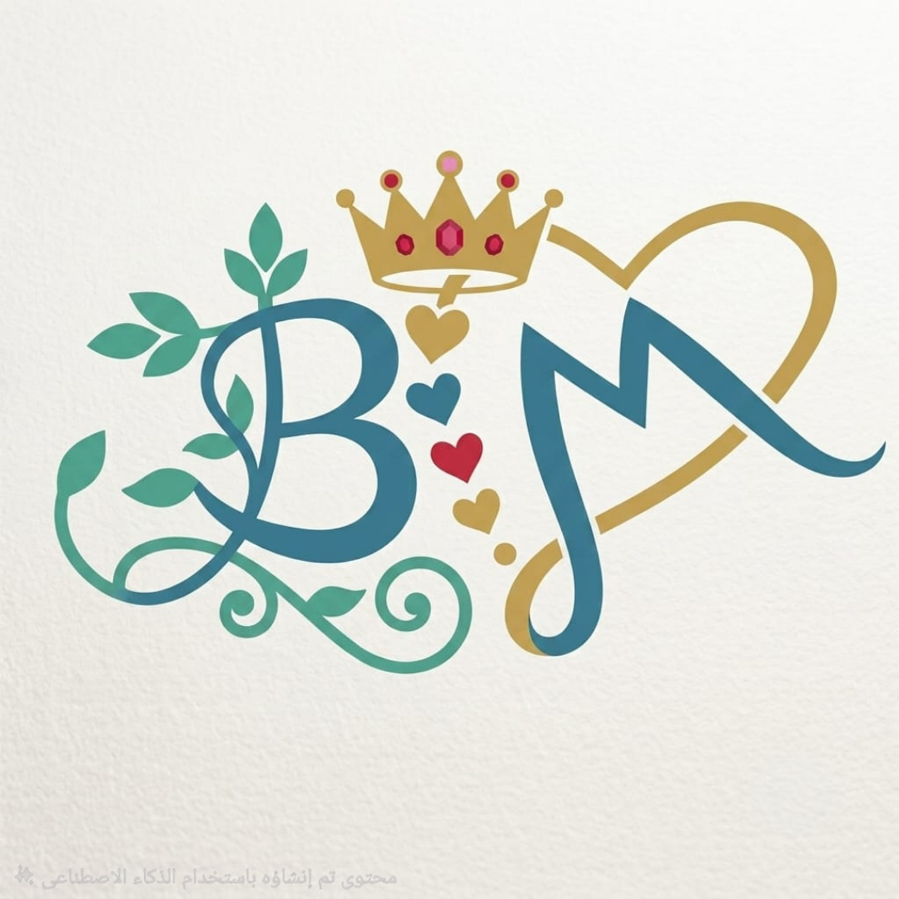

رسالة الموقع
نشر العلم النافع والتذكير بالله، والعناية بالتوحيد والسنة، والاستفادة من كلام العلماء، بأسلوب واضح ومتزن، مع الحرص على التثبت من النقول والمصادر.
مساحة لنشر الفوائد الشرعية والتذكير والمواعظ، ونقل ما تيسّر من كلام أهل العلم؛ رجاء النفع والعمل، والدلالة على الخير.

وجهة تجمع روابط الحسابات الرسمية وما يُنشر فيها من فوائد وتذكير.
نشر العلم النافع والتذكير بالله، والعناية بالتوحيد والسنة، والاستفادة من كلام العلماء، بأسلوب واضح ومتزن، مع الحرص على التثبت من النقول والمصادر.
وأن يجعل ما نقدمه خالصًا لوجهه الكريم.
موضوعات متنوعة للتذكير والفائدة، مع العناية بنقل الكلام إلى مصادره.
فوائد وتذكير بأصل الدين وما يتعلق بإفراد الله بالعبادة.
التنبيه إلى لزوم السنة واتباع هدي النبي ﷺ.
نقول وفوائد من كلام العلماء مع الحرص على عزوها.
كلمات تعين على محاسبة النفس والاستقامة والثبات.
أدعية وأذكار وتذكير بما يرقق القلب ويقوّي الصلة بالله.
مختارات نافعة في أبواب العلم والعمل والأخلاق.
يسعدني وجودكم ومتابعتكم، ويمكنكم اختيار المنصة التي تناسبكم.
تابع قناة تيليجرام ليصلك جديد المنشورات والتذكيرات.